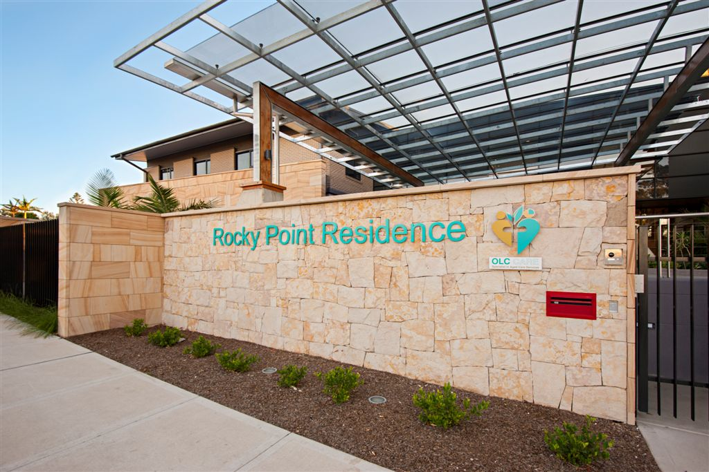

The Sisters of Our Lady of China Group provides high quality residential aged care across five facilities in Metropolitan Sydney. We pride ourselves on the individualised quality care we provide to our residents by our highly qualified and professional staff.
{kind=link}
Promoting the dignity and respect for human life at all stages, extending the hand of a Samaritan and caring with love, hope and faith, are all integral elements of our work.
Rocky Point Residence is a newly established state-of-the-art aged care facility providing general and respite care for 77 residents. There is a section specific for caring of residents with Chinese cultural background.
The facility is conveniently located in the Centre of St George area and is close to St George Leagues Club, Golf Course, Beaches, public and private hospitals, health care specialists and within walking distance to local restaurants and shops.
Rocky Point Residence is concept designed and equipped with the latest in aged care amenities.
Resident rooms and the communal areas are spacious, comfortable and tastefully decorated. There are single rooms with ensuite, double rooms with shared ensuite to choose from.
Lifts provide easy access to different levels.
{kind=link}
{kind=link}
The facility is designed for flexibility with ‘easy living’ features for residents such as wide access doors, 24-hour nursing call system, full air-conditioning, in room telephone outlet for private subscription and easy access to under covered outdoor areas and beautifully landscaped gardens.
We are excited to announce the opening of an 18 bed wing in the facility which is indicated to serve residents with Chinese culture background. Culture specific activities and catering will be part of the services provided to these residents.
Rocky Point Residence is an exciting new addition to St George area’s aged care community. It is committed to enhancing the wellbeing of residents by providing high quality accommodation and person centered care.
{kind=link}
{kind=link}